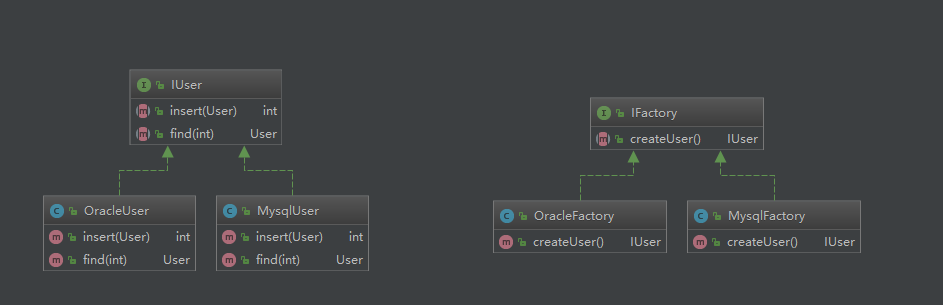

原文连接:https://www.cnblogs.com/ethan-wu/p/10745902.html
1 简单工厂设计模式
1.1简介
简单工厂模式属于创建者模式，又叫做静态工厂方法模式，但不属于23中GOF设计模式之一。简单工厂模式是由一个工厂对象决定创建出哪一种产品类的实例。简单工厂模式是工厂模式家族中最简单实用的模式，可以理解为不同工厂模式的一个特殊实现。
1.2简单工厂模式的角色
工厂类（creator）角色：简单工厂模式的核心，负责创建所有实例的逻辑。工厂类提供静态方法，根据传入的参数创建所需的产品对象。
抽象产品（Product）角色：简单工厂模式创建的所有的对象的父类，负责描述所有实例的公共接口。可以是抽象类或接口。
具体产品（Concrete Product）角色：是简单工厂模式的创建目标，所有创建的对象都是充当这个角色的某个具体类的实例。
1.3简单工厂模式的UML图
1.4例子
需求：实现简单计算器+、-、*、/功能。
第1步：定义公共接口，接口中定义计算结果的方法。
public interface ICalculable {
double getResult(double numberA, double numberB) throws Exception;
}
第2步：定义加、减、乘、除4个具体的实现类。
public class CalculateAdd implements ICalculable {
@Override
public double getResult(double numberA, double numberB) {
return numberA + numberB;
}
}
public class CalculateDiv implements ICalculable {
@Override
public double getResult(double numberA, double numberB) throws Exception {
if (numberB == 0) {
throw new Exception("不能除以0");
}
return numberA / numberB;
}
}
public class CalculateMul implements ICalculable {
@Override
public double getResult(double numberA, double numberB) {
return numberA * numberB;
}
}
public class CalculateSub implements ICalculable {
@Override
public double getResult(double numberA, double numberB) {
return numberA - numberB;
}
}第3步：创建工厂类，编写静态方法，根据方法参数创建相应对象实例并返回。
public class CalculationFactory {
public static ICalculable createCalculation(String operator) {
ICalculable calculable = null;
switch (operator) {
case "+":
calculable = new CalculateAdd();
break;
case "-":
calculable = new CalculateSub();
break;
case "*":
calculable = new CalculateMul();
break;
case "/":
calculable = new CalculateDiv();
break;
}
return calculable;
}
}第4步：编写测试类
public class CalculationTest {
public static void main(String[] args) {
try {
Scanner scanner = new Scanner(System.in);
System.out.println("请输入数字A");
String strA = scanner.nextLine();
System.out.println("请输入数字B");
String strB = scanner.nextLine();
System.out.println("请输入操作符：(+、-、*、/)");
String strOperate = scanner.nextLine();
double result = CalculationFactory.createCalculation(strOperate)
.getResult(Double.parseDouble(strA),Double.parseDouble(strB));
System.out.println("计算结果=" + result);
} catch (Exception e) {
e.printStackTrace();
System.out.println("输入有误：" + e.getMessage());
}
}
}  下面来看一下这个这个例子的UML图，白色虚线为依赖关系，绿色虚线为接口实现类关系
下面来看一下这个这个例子的UML图，白色虚线为依赖关系，绿色虚线为接口实现类关系
1.5小结
简单工厂模式的优点：工厂类中包含了必要的逻辑判断，根据客户端传入的参数，动态实例化相关的类，对客户端来说，去除了对具体产品的依赖。
缺点：添加新的功能时，除了添加产品类外，需要修改工厂类，违反了开放-关闭原则。
1.6JDK中的简单工厂模式
在开发中我们通过Calendar.getInstance()获取日历对象进行一些时间的处理，Calendar类是抽象类，在这里既作为做工厂类（creator）提供静态方法getInstance获取不同的日历实现，也作为抽象产品（Product）描述所有实例的公共行为，GregorianCalendar，JapaneseImperialCalendar，BuddhistCalendar作为Calendar的具体实现，充当具体产品（Concrete Product）的角色。
下面来看一下类图及代码

2 、工厂方法设计模式
2.1简介
定义一个用户创建对象的接口，让子类决定实例化那一个类。工厂方法使一个类的实例化延迟到其子类。
2.2工厂方法模式中的角色
抽象产品（Product）角色：定义工厂方法所创建的对象的接口，可以是抽象类或接口。
具体产品（Concrete Product）角色：具体的产品，实现了Product接口，一般有多个。
抽象工厂（Creator）角色：定义创建对象的接口，声明创建方法，该方法返回一个Product类型的对象。
具体工厂（ConcreteCreator）角色：实现抽象工厂中的创建方法，返回一个ConcreteCreator实例。
2.3 工厂方法模式UML图（本图摘自《大话设计模式》）
2.4 改进简单工厂中简单计算器的实现
第一步：创建工厂接口，定义工厂方法，该方法返回产品的抽象类对象（Product）。
public interface IFactory {
ICalculable createCalculation();
}第二步：创建工厂接口的实现类对象，实现工厂方法功能（方法里面返回具体的产品实现类对象）
public class AddFactory implements IFactory {
@Override
public ICalculable createCalculation() {
return new CalculateAdd();
}
}
public class DivFactory implements IFactory {
@Override
public ICalculable createCalculation() {
return new CalculateDiv();
}
}
public class MulFactory implements IFactory {
@Override
public ICalculable createCalculation() {
return new CalculateMul();
}
}
public class SubFactory implements IFactory {
@Override
public ICalculable createCalculation() {
return new CalculateSub();
}
}第三步：编写测试代码
public static void main(String[] args) {
try {
IFactory factory = new AddFactory();
ICalculable calculation = factory.createCalculation();
calculation.getResult(1, 2);
} catch (Exception e) {
e.printStackTrace();
}
}下面来看一下工厂方法模式在本例中的UML图
2.5 工厂方法模式的优缺点
优点：添加新功能时，只需要添加此功能对应的计算类（实现ICalculable接口）和相应的工厂类（实现IFactory接口），符合开放-关闭原则。
缺点：把简单工厂的内部逻辑判断转移到客户端代码进行，增加功能需要修改客户端代码。
到这里肯定有小伙伴会说：没看出来工厂方法模式比简单工厂模式好在哪里呀，只是将简单工厂模式中工厂类的判断逻辑转移到了工厂方法模式中的客户端中进行。
下面再讲一个例子：雷锋帮助老人扫地、洗衣、买米的案例。
第1步：定义雷锋类（相当于Product），通常情况下Product为抽象类或接口，ConcreteProduct类中重写Product中的抽象方法，在这里因为学习雷锋做好事的人做的事情是和雷锋做的事情是一样的，所以雷锋类直接定义做好事的具体细节，学习雷锋做好事的人只需要继承雷锋类就可以了（学习雷锋做好事的人相当于ConcreteProduct）
public class LeiFeng {
public void sweep() {
System.out.println("扫地");
}
public void wash() {
System.out.println("洗衣");
}
public void buyRice() {
System.out.println("买米");
}
}第2步：定义学习雷锋做好事的人的类：学雷锋的大学生类和社区志愿者类，让他们都继承雷锋类。
/**
* 学雷锋的志愿者
*/
public class Volunteer extends LeiFeng {
}
/**
* 学雷锋的大学生
*/
public class Undergraduate extends LeiFeng {
}第3步：编写简单工厂类
public class SimpleFactory {
public static LeiFeng createLeifeng(String type) {
LeiFeng leiFeng = null;
switch (type) {
case "学雷锋的大学生":
leiFeng = new Undergraduate();
break;
case "社区志愿者":
leiFeng = new Volunteer();
break;
}
return leiFeng;
}
}第4步：让三个学生分别帮助老人扫地、洗衣、买米。
public static void main(String[] args) {
LeiFeng leifeng1 = SimpleFactory.createLeifeng("学雷锋的大学生");
leifeng1.sweep();
LeiFeng leifeng2 = SimpleFactory.createLeifeng("学雷锋的大学生");
leifeng2.wash();
LeiFeng leifeng3 = SimpleFactory.createLeifeng("学雷锋的大学生");
leifeng3.buyRice();
}看到上面的代码，应该有小伙伴闻到了坏味道，因为有3处相同的代码（在代码中我们应该尽量减少重复的代码，第一是容易写错，第二是如果要修改的话，所有的地方都要修改）。
第5步：将简单工厂模式改为工厂方法模式。创建工厂接口，定义工厂方法，该方法返回雷锋类（LeiFeng）。
public interface IFactory {
LeiFeng createLeiFeng();
}第6步：创建工厂接口的实现类对象，实现工厂方法功能。在这里就是定义学雷锋的大学生工厂和社区志愿者工厂，实现工厂接口的方法，在方法中分别创建学雷锋的大学生类和社区志愿者类。
/**
* 学雷锋的大学生工厂，负责创建大学生对象
*/
public class UndergraduateFactory implements IFactory {
@Override
public LeiFeng createLeiFeng() {
return new Undergraduate();
}
}
/**
* 社区志愿者工厂，负责创建社区志愿者对象
*/
public class VolunteerFactory implements IFactory {
@Override
public LeiFeng createLeiFeng() {
return new Volunteer();
}
}第7步：实现第4步相同的功能。
public static void main(String[] args) {
IFactory factory = new UndergraduateFactory(); //如果要将大学生换成志愿者，只需要修改这一处就可以了
LeiFeng leiFeng1 = factory.createLeiFeng();
LeiFeng leiFeng2 = factory.createLeiFeng();
LeiFeng leiFeng3 = factory.createLeiFeng();
leiFeng1.sweep();
leiFeng2.wash();
leiFeng3.buyRice();
}再来看一下UML图
到这里，小伙伴们应该可以看出来工厂方法模式比简单工厂方法更好的地方了，工厂方法模式克服了简单工厂违反开放-封闭原则的缺点，又保持了封装对象创建过程的优点。这样在更换具体的实现对象时（比如将大学生换成社区志愿者），不需要大的改动就可以实现。降低了客户端程序与产品对象的耦合，工厂方法模式是简单工厂模式的进一步抽象和推广。由于使用了多态，工厂方法模式既保持了简单工厂的优点，又克服了简单工厂模式添加新功能需要修改原有类的缺点。
2.6 工厂方法模式在日志框架中的应用
在项目中我们通常会使用日志记录程序运行的状态信息，下面来看一下slf4j中工厂方法模式的应用。
在这里面Logger接口充当抽象产品角色，Logger有多个具体的实现；ILoggerFactory充当抽象工厂的角色，里面getLogger方法的返回值为抽象接口Logger类型，这样不同日志框架就可以通过实现ILoggerFactory接口并实现Logger接口来实现自己的记录日志的功能，符合开闭原则。
3.抽象工厂模式
3.1简介
抽象工厂模式是指提供一个创建一系列相关或相互依赖的接口，而无需指定它们具体的类。抽象工厂模式是工厂方法模式的进一步演进，工厂方法模式适用于单个产品，不同实现的情况，比如上面说的计算器中的ICalculable接口，日志框架中的Logger接口。在实际情况中比较复杂的业务通常会有多个抽象产品，每个抽象产品有不同的实现，对于有多个抽象产品，每个产品有多个不同实现的问题，有一个专门的工厂模式叫抽象工厂模式。
下面先来看一下UML图
AbstractProductA和AbstractProductB是两个抽象产品，之所以抽象，是因为他们可能都有多个不同的实现，而ProductA1、ProductA2、ProductB1和ProductB2分别是对两个抽象产品的具体分类实现。AbstractFactory是抽象工厂接口，它里面包含所有产品创建的抽象方法，ConcreteFactory1和ConcreteFactory2就是具体的工厂了。通常在运行时创建一个ConcreteFactory实例，这个具体的工厂再创建具有特定实现的产品对象，也就是说，使用不同的具体工厂，创建不同的产品对象。
3.2例子
这里先说一个数据访问的例子，现在分别使用Mysql和Oracle完成对用户User的新增和和查询操作。
第1步，编写抽象产品（IUser）及Mysql和Oracle对IUser 的实现类
public interface IUser {
int insert(User user);
User find(int id);
}第2步，编写Mysql和Oracle对IUser 的实现类
public class MysqlUser implements IUser {
@Override
public int insert(User user) {
System.out.println("MysqlUser insert()");
return 0;
}
@Override
public User find(int id) {
System.out.println("MysqlUser find()");
return null;
}
}
public class OracleUser implements IUser {
@Override
public int insert(User user) {
System.out.println("OracleUser insert()");
return 0;
}
@Override
public User find(int id) {
System.out.println("OracleUser find()");
return null;
}
}第3步，编写抽象工厂接口IFactory，包含所有产品创建的抽象方法
public interface IFactory {
IUser createUser();
}第4步，编写具体工厂类（MysqlFactory）及（OracleFactory）
public class MysqlFactory implements IFactory {
@Override
public IUser createUser() {
return new MysqlUser();
}
}
public class OracleFactory implements IFactory {
@Override
public IUser createUser() {
return new OracleUser();
}
}好了，来看一下UML图，到现在为止，现在的情况与上面说的工厂方法模式完全一致，一个抽象产品（IUser），有多个特定的实现（MysqlUser和OracleUser）。

现在需求来了，我们的项目中肯定不止用户一个抽象对象，肯定还有部门（dempartment）等其他对象，这些产品同样需要进行数据访问，现在加上部门产品（IDepartment）的数据访问代码，与IUser相似，创建IDepartment接口，分别使用Mysql和Oracle实现接口。
public interface IDepartment {
int insert(Department department);
Department find(int id);
}
public class MysqlDepartment implements IDepartment {
@Override
public int insert(Department department) {
System.out.println("MysqlDepartment insert()");
return 0;
}
@Override
public Department find(int id) {
System.out.println("MysqlDepartment find()");
return null;
}
}
public class OracleDempartment implements IDepartment {
@Override
public int insert(Department department) {
System.out.println("OracleDempartment insert()");
return 0;
}
@Override
public Department find(int id) {
System.out.println("OracleDempartment find()");
return null;
}
}添加IDepartment产品后，抽象工厂接口也需要添加创建IDempartment产品的抽象方法，现在重新来看一下新增IDepartment产品后抽象工厂接口及具体工厂类的代码
public interface IFactory {
IDepartment createDepartment(); //新增Department产品
IUser createUser();
}
public class MysqlFactory implements IFactory {
@Override
public IDepartment createDepartment() {
return new MysqlDepartment(); //新增Department产品
}
@Override
public IUser createUser() {
return new MysqlUser();
}
}
public class OracleFactory implements IFactory {
@Override
public IDepartment createDepartment() {
return new OracleDempartment(); //新增Department产品
}
@Override
public IUser createUser() {
return new OracleUser();
}
}下面再来看一下UML图
现在的代码结构已经和本小节开头的抽象工厂模式的UML描述的完全一样了。
3.3 抽象工厂的优点与缺点
优点：容易进行产品系列（在这里就是Mysql和Oracle）交换，由于具体的工厂类在一个应用中只需要初始化一次，这就使得改变一个具体的工厂变的非常容易，只需改变具体工厂就可以使用不同的产品配置。在我们的设计中不能防止需求的改动，理想的情况是让改动变得最小，现在如果更改数据库访问，只需要改变具体的工厂就可以了；第二个好处就是使客户端与创建实例的过程解耦，客户端通过它们的抽象接口访问实例，具体的类名也被具体的工厂隔离，不会出现在客户端代码中。
缺点：如果增加新的产品，除了添加新产品的抽象的接口及Mysql和Oracle的实现类外，还需要需要修改抽象工厂接口，原有的具体的工厂实现类，在这里就是必须要修改IFactory、OracleFactory和MysqlFactory，不符合开闭原则。 现在如果添加新的产品，至少需要修改3个类，如果除了Mysql和Oracle再添加一类产品的实现，如：SqlServer，那么以后添加新的产品时，需要修改的类就更多了，这样设计确实还是有问题的，那么有没有什么办法优化呢，答案是一定的。
3.4使用简单工厂优化抽象工厂
将现有的IFactory、OracleFactory和MysqlFactory改为一个工厂类，下面看代码
public class AccessFactory {
public static IUser createUser(String type) {
if ("Mysql".equals(type)) {
return new MysqlUser();
} else if ("Oracle".equals(type)) {
return new OracleUser();
}
return null;
}
public static IDepartment createDepartment(String type) {
if ("Mysql".equals(type)) {
return new MysqlDepartment();
} else if ("Oracle".equals(type)) {
return new OracleDempartment();
}
return null;
}
}使用简单工厂模式优化后，添加新的产品或是添加新的产品分类实现时，只需要修改工厂类1个类就可以了。不过上面的代码看起来还是有点问题，每次创建产品时需要传参数进来，来判断具体创建什么分类的产品，当多个客户端创建产品时，每个客户端都需要知道要创建的产品的分类，这样的话，如果要修改分类，那么每个客户端都需要修改，这样显然不太好，解决的方法就是我们把要实现的分类，也就是创建产品时要传的参数抽取为AccessFactory的成员变量，将type放到配置文件中，在项目初始化的时候读取配置文件，这样，创建产品的时候，就不需要传参数过来，如果要修改产品的实现分类时，只需要修改配置文件就可以了，抽取配置文件还有一个好处就是修改配置参数时不需要重新编译代码，如果不抽取的话，为了修改一个值，而去重新编译项目的所有java代码，有点杀鸡用宰牛刀的感觉。上面的代码还有第二个问题，if，else判断问题，如果要添加新的产品分类，还是需要修改代码，我们可以改为使用反射创建对象，优化判断过多的问题
public class AccessFactory {
private static final String type = "com.example.abstractfactory.dao.mysql"; //配置文件中抽取
public static IUser createUser() {
try {
return (IUser) Class.forName(type + ".User").newInstance();
} catch (Exception e) {
e.printStackTrace();
}
return null;
}
public static IDepartment createDepartment() {
try {
return (IDepartment) Class.forName(type + ".Department").newInstance();
} catch (Exception e) {
e.printStackTrace();
return null;
}
}
}好了，现在除了添加新的产品需要修改工厂类代码外，其他的都不需要修改代码了。再来看一下UMl图
写此博客是为了日后方便复习，加深印象，交流学习。对于其中的错误之处，欢迎网友积极指出，本人一定听取意见并进行合理改正。